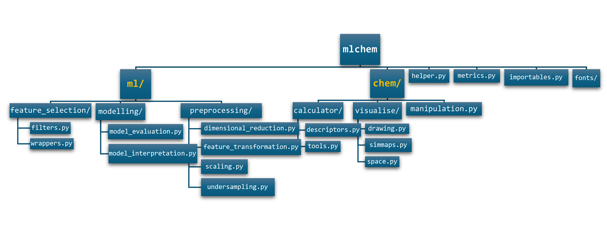
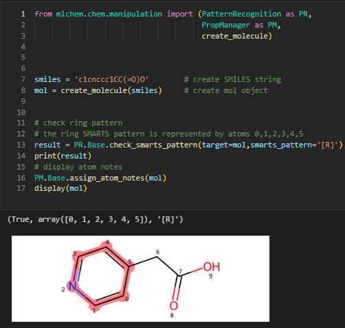
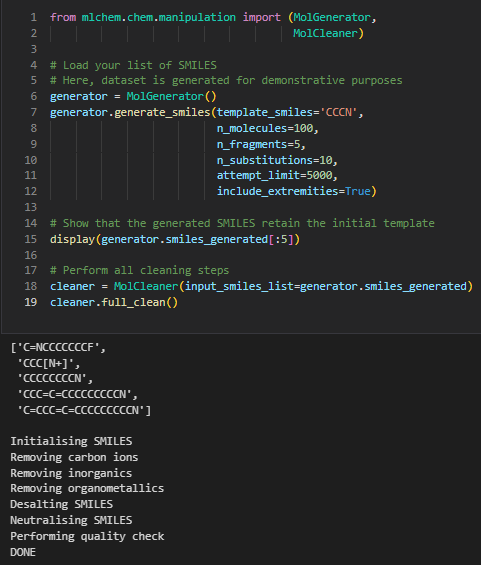
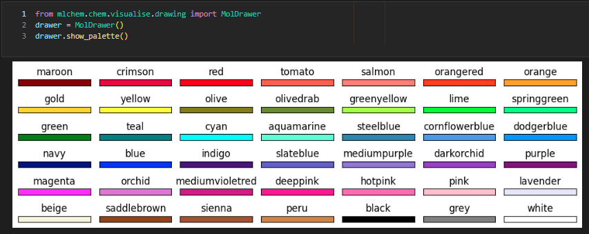

mlchem¶


mlchem is a Python cheminformatics library designed for the scientific community. It provides a comprehensive set of tools for data handling, molecule manipulation, drawing, machine learning, and plotting.
Documentation¶
Available at seacunilever.github.io/mlchem. Start with the Quickstart, browse the API reference, or read the architecture guide.
Features¶
Data Handling: Efficiently manage and process chemical data, including loading, cleaning, and transforming datasets.
Molecule Manipulation: Tools for manipulating molecular structures, such as adding or removing atoms, modifying bonds, and generating molecular conformations.
Pattern Recognition: An extensive list of functions to search for specific structural patterns.
Molecule Drawing: Visualise molecules with customisable drawing options, creating high-quality images for presentations and publications.
Machine Learning: Implement machine learning models for cheminformatics, including training, evaluating, and deploying models to predict chemical properties and activities.
Feature Analysis and Interpretation: Interpret model features and provide insightful plots.
Architecture¶

For package responsibilities and the typical data flow, see the architecture guide.
Installation¶
To install mlchem, open your command prompt and use either:
pip install git+https://github.com/seacunilever/mlchem.git
or, from PyPI:
pip install mlchem-ul
Then import in Python as:
import mlchem
Quickstart¶
This end-to-end example turns SMILES into Morgan fingerprints and evaluates a classifier with cross-validated ROC-AUC. The labels are toy values to demonstrate the API, not experimental measurements; replace them with a validated target for real modeling.
from sklearn.ensemble import RandomForestClassifier
from sklearn.metrics import roc_auc_score
from mlchem.chem.calculator.descriptors import get_fingerprint_df
from mlchem.ml.modelling.model_evaluation import crossval
smiles = [
'CCO', 'CCCO', 'CC(C)O', 'CCCCO',
'CCN', 'CCCN', 'CC(C)N', 'CCCCN',
'c1ccccc1', 'Cc1ccccc1', 'c1ccncc1', 'c1ccoc1',
]
y = [0, 0, 0, 0, 1, 1, 1, 1, 0, 0, 1, 1]
X = get_fingerprint_df(smiles, fp_type='m', radius=2, nBits=256)
scores = crossval(
estimator=RandomForestClassifier(n_estimators=20, random_state=42),
X=X,
y=y,
metric=roc_auc_score,
n_fold=3,
task_type='classification',
shuffle=True,
random_state=42,
response_method='predict_proba',
)
print(f"Mean CV ROC-AUC: {scores['cv_mean']:.3f}")
See the get_fingerprint_df API
for fingerprint options and the
crossval API
for splitters, explicit folds, and response methods.
Usage¶
Here are some basic examples of how to use mlchem:
Calculate RDKit descriptors¶
See the get_rdkitDesc API.
from mlchem.chem.manipulation import create_molecule
from mlchem.chem.calculator import descriptors
mol1 = create_molecule('c1ccccc1CCCO')
mol2 = create_molecule('CCCCCN')
desc_df = descriptors.get_rdkitDesc([mol1, mol2],include_3D=True)
Calculate fingerprints¶
See the get_fingerprint_df API
and the single-molecule
get_fingerprint API.
from mlchem.chem.calculator import descriptors
smiles_list = ['CCO', 'CCN', 'CCC']
# Morgan bit-vectors (default configuration is radius=2 and nBits=2048)
fp_df = descriptors.get_fingerprint_df(smiles_list, fp_type='m', radius=2, nBits=2048)
# Include bit info for interpretability on a single molecule
fp, bit_info = descriptors.get_fingerprint('CCO', fp_type='m', radius=2, nBits=2048, include_bit_info=True)
Calculate chemotypes at scale¶
See the get_chemotypes API.
from mlchem.chem.calculator import descriptors
smiles_list = ['CCO', 'CCN', 'COCC', 'c1ccccc1O']
# n_jobs=1 keeps serial execution (default)
# n_jobs>1 enables multi-threaded molecule processing
# n_jobs=-1 uses all available CPU cores
chemotypes = descriptors.get_chemotypes(smiles_list, n_jobs=4)
Performance note: since v1.1.0, chemotype execution reuses per-molecule rule results and avoids repeated molecule preparation. This is especially important for large rule dictionaries and medium-to-large training sets.
Control ML Verbosity¶
See the
SequentialForwardSelection API
and
CombinatorialSelection API.
import logging
from sklearn.linear_model import LogisticRegression
from mlchem.ml.feature_selection.wrappers import (
SequentialForwardSelection,
CombinatorialSelection,
)
# Enable library logs in your notebook session
logging.basicConfig(level=logging.INFO)
sfs = SequentialForwardSelection(
estimator=LogisticRegression(),
estimator_string='lr',
metric=lambda y_true, y_pred: (y_true == y_pred).mean(),
log_level='INFO',
)
# Runtime toggle (use DEBUG for very verbose traces)
sfs.set_log_level('DEBUG')
sfs.set_log_level('WARNING')
cs = CombinatorialSelection(
estimator=LogisticRegression(),
metric=lambda y_true, y_pred: (y_true == y_pred).mean(),
log_level='INFO',
)
Balance an imbalanced training set¶
See the
undersample API
for input requirements and examples.
The class_column must exist in train_set. It is also required in test_set when add_dropped_to_test=True; otherwise, the test-set target column is not accessed. Invalid target proportions and non-binary training labels raise ValueError; missing required columns raise KeyError with the missing column names.
from mlchem.ml.preprocessing.undersampling import undersample
train_balanced, test_updated = undersample(
train_set=train_df,
test_set=test_df,
class_column='class',
desired_proportion_majority=0.5,
log_level='INFO',
)
Stress-Test Models with Y-Scrambling¶
See the
y_scrambling API
for split, metric, and response-method options.
from mlchem.ml.modelling.model_evaluation import y_scrambling
y_scrambling(
estimator=model,
train_set=X_train,
y_train=y_train,
metric=metric_fn,
n_scrambles=50,
safety_multiplier=2.3,
plot=False,
log_level='INFO',
)
Returned diagnostics include:
reference_scorebest_random_scoreprobability_bettersafety_margin_ratio
Cross-Validation Majority Voting¶
See
MajorityVote.evaluate_cv
for soft-vote probabilities, fold definitions, and reliability ranking.
from sklearn.linear_model import LogisticRegression
from sklearn.ensemble import RandomForestClassifier
from mlchem.metrics import get_geometric_S
from mlchem.ml.modelling.model_evaluation import MajorityVote, generate_cv_indices
estimators = [
LogisticRegression(random_state=1),
RandomForestClassifier(random_state=1),
]
columns = [
X_train.columns.tolist(),
X_train.columns.tolist(),
]
mv = MajorityVote(
train_set=X_train,
y_train=y_train,
task_type='classification',
estimator_list=estimators,
column_list=columns,
estimator_names=['LR', 'RF'],
)
folds = generate_cv_indices(
X_train.values,
y=y_train,
cv_iter=5,
task_type='classification',
shuffle=True,
random_state=42,
)
df_mv = mv.evaluate_cv(
metric=get_geometric_S,
metric_name='G',
cv_indices=folds,
logic='greater',
desired_performance_score='train_cv_average',
)
# Ranked by reliability_mean (descending)
print(df_mv[['combination', 'validation_mean', 'reliability_mean']].head())
# Final consensus stage: fit shortlisted estimators on full train set
# and generate train/test prediction tables.
fit_report = mv.fit(return_prediction_dataframes=True)
fit() is the final consensus step after model selection.
Capture pipeline logs¶
Library messages are emitted at INFO level by default. Configure a selector’s
log_level as shown above, or capture logs from an entire pipeline in memory
or a file:
from mlchem.helper import start_logging
logs = start_logging(log_level='INFO', to_console=True)
sfs.fit(X_train, y_train, X_test, y_test)
print(logs.get_logs())
# To log to a file instead:
# logs = start_logging(log_level='INFO', to_file='pipeline.log')
# sfs.fit(X_train, y_train, X_test, y_test)
Visual examples¶
Pattern recognition¶
See the molecule manipulation API for pattern-recognition utilities.

De novo molecule generation and cleaning¶
See the molecule manipulation API for molecule creation and generation utilities.

Predefined colour palette¶
See the drawing API for drawing and palette options.

More examples in the examples folder.
Modules¶
Browse the API by package:
chem.visualise/¶
space.py API: Computes and visualises datasets in a lower-dimensional space.
simmaps.py API: Generates “rdkit-like” similarity maps based on atomic importance weights.
drawing.py API: Handles the drawing of molecular structures with many customisable options.
chem.calculator/¶
tools.py API: Provides tools for chemical calculations.
descriptors.py API: Calculates RDKit and Mordred descriptors, chemotypes, fingerprints, and other molecular features. Start with
get_fingerprint_dforget_rdkitDesc.
chem.manipulation.py¶
The mlchem.chem.manipulation API
provides molecule creation, conversion, manipulation, and pattern-recognition
utilities. See
create_molecule
to get started.
ml.feature_selection/¶
filters.py API: Provides filter-based feature selection.
wrappers.py API: Includes
SequentialForwardSelectionandCombinatorialSelection.
ml.modelling/¶
model_interpretation.py API: Provides tools for interpreting machine learning models.
model_evaluation.py API: Includes
crossval,y_scrambling, andMajorityVote.evaluate_cv.
ml.preprocessing/¶
dimensional_reduction.py API: Compresses dataframes using dimensionality-reduction techniques.
feature_transformation.py API: Expands features with
polynomial_expansion.scaling.py API: Scales dataframes with standard, min-max, and robust scaling, including
scale_df_standard.undersampling.py API: Handles imbalanced datasets.
Development setup¶
Clone the repository, create and activate a virtual environment, then install the package in editable mode with its requirements:
git clone https://github.com/seacunilever/mlchem
cd mlchem
python -m venv _venv
# Activate on macOS/Linux:
source _venv/bin/activate
# Activate on Windows (PowerShell):
.\_venv\Scripts\Activate.ps1
# Activate on Windows (cmd.exe):
_venv\Scripts\activate.bat
pip install -r requirements.txt
pip install -e .
Contributing¶
We welcome contributions to mlchem. Please consult the contribution guide for how to propose changes, report bugs, and submit pull requests.
Testing and Maintainer Guide¶
Python 3.12, 3.13, and 3.14 are supported and all are required to pass in CI. For routine development, run the tests from the repository root:
python -m pytest -vv tests
Activate the project virtual environment before running the commands below.
The local matrix runner expects existing environments such as py312, py313,
and py314 under ~/Envs; if you use a different setup, use tox instead.
Local matrix testing¶
Run the supported Python versions:
python scripts/run_local_matrix.py
Useful options:
--refresh-badgesruns the matrix and refreshes the local coverage badges.--full-install -- -vv testsreinstalls dependencies before testing.--no-live-output -- -vv testsprints only the final summary.--allow-314-failure -- -vv teststreats Python 3.14 failures as warnings for exploratory local runs only; normal runs and CI remain blocking.
On Windows, use py -u scripts/run_local_matrix.py if output appears buffered.
Tox is an alternative when the matrix runner’s environment layout does not fit:
python -m pip install tox
python -m tox -e py312,py313,py314
Tox skips interpreters that are unavailable locally. CI installs Python 3.14 and requires it to pass.
Warning and coverage checks¶
A narrowly scoped pytest warning filter suppresses an upstream SHAP
PendingDeprecationWarning related to matplotlib colormap API changes. To audit
all warnings explicitly, run:
python -m pytest -vv tests -W default
The canonical coverage baseline uses Python 3.12, matching the CI py312 job:
python -m pytest -q tests --cov=mlchem --cov-config=.coveragerc --cov-branch --cov-report=term --cov-report=xml:coverage.xml
python - <<'PY'
import xml.etree.ElementTree as ET
root = ET.parse('coverage.xml').getroot()
line_pct = round(float(root.get('line-rate', 0.0)) * 100)
branch_pct = round(float(root.get('branch-rate', 0.0)) * 100)
print(f'line={line_pct}, branch={branch_pct}')
PY
python -m anybadge --label "line cov" --value <LINE_PERCENT> --file assets/coverage.svg --overwrite 50=red 60=orange 70=yellow 80=yellowgreen 90=green
python -m anybadge --label "branch cov" --value <BRANCH_PERCENT> --file assets/coverage-branch.svg --overwrite 50=red 60=orange 70=yellow 80=yellowgreen 90=green
Line coverage measures which executable lines ran; branch coverage also measures whether the outcomes of conditional logic were exercised. CI does not update the badges; maintainers refresh and commit them locally.
Release refresh¶
Update
version=insetup.py.Run the local matrix with
--refresh-badgesas described above.Commit the code, tests, documentation, and refreshed badges.
Building the Documentation¶
The documentation is built with Sphinx using autodoc, myst-parser, and viewcode. Source files live under docs/source/, build output lands in docs/build/html/, and a small post-build script (docs/_publish.py) mirrors that build into docs/ so GitHub Pages always serves the latest version. viewcode adds source links to documented modules, classes, and methods.
Single-source content:
docs/source/welcome.md{include}s this README, so you only editREADME.md— never duplicate content into the welcome page.
Tracked and Generated Files¶
Only the inputs and the published output are tracked in git:
Tracked (do edit / commit)
docs/source/— Sphinx inputs (conf.py,*.rst,welcome.md,_static/custom.css).docs/Makefile,docs/make.bat,docs/_publish.py— build entry points.docs/.nojekyll— tells GitHub Pages to keep_static/,_sources/, and_modules/.docs/*.html,docs/_static/,docs/_sources/,docs/_images/,docs/_modules/,docs/objects.inv,docs/searchindex.js— the published mirror that GitHub Pages serves; updated automatically bymake htmlvia_publish.py.
Not tracked (regenerated on every build, ignored via
.gitignore)docs/build/— Sphinx scratch output, includingbuild/html/.doctrees/andbuild/html/.buildinfoincremental-build caches.docs/*warnings*.{log,txt}— ad-hoc diagnostic logs.
Prerequisites¶
The documentation toolchain is part of requirements.txt. If you only want the doc deps:
pip install sphinx myst-parser
Build and Publish¶
Run these commands from the docs/ directory, not docs/source/:
# wipe previous build artefacts (clears docs/build/)
make clean
# build HTML and automatically mirror docs/build/html/ -> docs/
make html
make html runs Sphinx and then invokes _publish.py, which:
updates changed files and removes stale published assets at the root of
docs/(everything exceptsource/,build/,Makefile,make.bat,_publish.py,.nojekyll,.gitignore);ensures the
.nojekyllmarker is present so GitHub Pages keeps_static/,_sources/, and_modules/.
Unchanged files are left in place, avoiding unnecessary replacement of files
that may be open on Windows. If a changed file is locked, close the application
using it and rerun make html. Commit the regenerated files at the root of
docs/; docs/build/ stays local.
If you ever build with a raw sphinx-build invocation, run the mirror step manually:
make publish
On Windows the same targets are dispatched through make.bat, so the commands work in both cmd and PowerShell as long as sphinx-build and python are on the PATH.
Common pitfalls: running
make htmlfromdocs/source/(noMakefilethere → “no rule” / “missing Makefile” error), or typingmake build(the Sphinx target ishtml;buildis the output directory, not a target).
Third-Party Dependencies¶
This project uses the SELFIES Python package for molecular string representations.
SELFIES is licensed under the Apache License 2.0. In accordance with its license, the relevant license is included in this repository.
This project uses and adapts code from the RDKit cheminformatics toolkit, which is licensed under the BSD 3-Clause License.
License¶
This project is licensed under the BSD-3 License.
Acknowledgements¶
Special thanks to the Safety, Environmental & Regulatory Science (SERS) Department at Unilever.